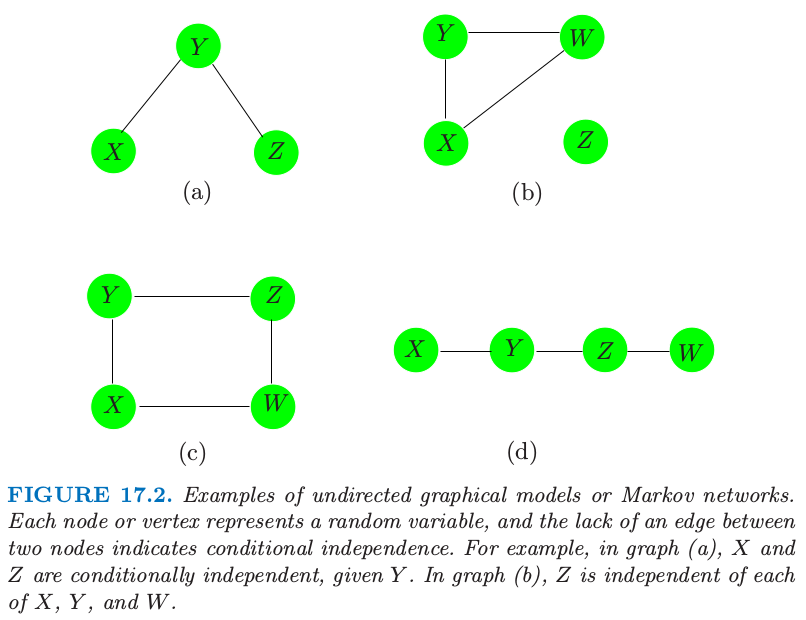
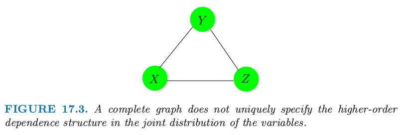

马尔科夫图及其性质
| 原文 | The Elements of Statistical Learning |
|---|---|
| 翻译 | szcf-weiya |
| 时间 | 2017-02-24:2017-02-24 |
这部分我们讨论图作为随机变量集的联合分布的模型的基本性质。我们将下面两部分的讨论放在后面的章节中，一个是（a）从数据对边的参数的估计和参量化，另一个是（b）估计图的拓扑结构。
图17.2显示了无向图的四个例子。图$\cal G$包含数据对$(V,E)$，其中$V$是顶点的集合，$E$为边的集合（用顶点对定义）。对于两个结点$X$和$Y$，如果存在一条边将它们连起来，则这两个结点称为邻接；这用$X\sim Y$来记。路径$X_1,X_2,\ldots, X_n$是连接的顶点集，也就是$X_{i-1}\sim X_i,i=2,\ldots,n$。完全图是每个顶点对都被一条边相连。子图$U\in V$是顶点及其边的子集。举个例子，图17.2（a）的$（X,Y,Z）$形成路径但不是完全图。

图17.2. 无向图模型或者马尔科夫网络的例子。每个结点或顶点表示一个随机变量，两个结点之间缺失边表示条件独立。举个例子，在图（a）中，在给定$Y$的情况下，$X$和$Z$是独立的。在图（b）中，$Z$与$X,Y,W$中的每一个都是独立的。
假设我们有图$\cal G$，它的顶点集合$V$表示联合分布为$P$的随机变量的顶点集$V$。在马尔科夫图$\cal G$中，某条边的缺失表示在给定其他结点的变量，对应的随机变量是条件独立的。这用下面的记号来表示： 其中“rest”表示图中所有的其他结点。举个例子，在图17.2（a）中$X\bot Z\mid Y$。这也称作$\cal G$的逐对马尔科夫独立（pairwise Markov independencies）。
如果$A,B$和$C$为子图，如果$A$和$B$的任一路径都交于$C$中的结点，则$C$称为分离$A$和$B$。举个例子，$Y$分离图17.2（a）和（d）的$X$和$Z$，并且$Z$分离（d）中的$Y$和$W$。图17.2（b）的$Z$与$X,Y,W$不相连，则我们称这两个集合被空集分离。在图17.2（c）中，$C={X,Z}$分离$Y$和$W$。
分离集有良好的性质，它们将图分解成条件独立的部分。特别地，在含有$A,B$和$C$子图的图$\cal G$, 这称作$\cal G$的全局马尔科夫性质（global Markov properties）。事实上，图的逐对马尔科夫性质(pairwise Markov properties)和整体马尔科夫性质(global Markov properties)是等价的（对于有正分布的图）。也就是，具有满足逐对马尔科夫独立性和全局马尔科夫假设的相关概率分布(associated probability distribution)的图的集合是相同的。（？？？）这个结果对于从简单成对性质中推断整体独立关系是很有用的。举个例子在图17.2（d）中$X\bot Z\mid{Y,W}$，因为这是一个马尔科夫图，且$X$和$Z$之间没有连接。但是$Y$也将$X$从$Z$和$W$中分离，因此由整体马尔科夫假设我们得出$X\bot Z\mid Y$和$X\bot W\mid Y$。类似地，我们有$Y\bot W\mid Z$。
weiya注
pairwise markov properties: 寻找缺失边，在给定其他结点的情况下，缺失边的两个顶点相互独立；
global markov properties: 寻找分离集，在给定分离集的情况下，被分离的子图相互独立。
全局马尔科夫性质允许我们将图分解成更小的易控制的可以部分，因此在计算和解释中有本质上的简化。基于这个目的，我们将图分解成团（clique）。一个团是完全子图——所有顶点都与其他的邻接的顶点集；如果一个团，没有其他顶点可以加进去仍然是一个团的称为最大团。图17.2的最大团为
- (a) {X,Y},{Y,Z}
- (b) {X,Y,W},{Z}
- (c) {X,Y},{Y,Z},{Z,W},{X,W}
- (d) {X,Y},{Y,Z},{Z,W}
尽管接下来应用到连续和离散的分布，但是大部分的发展是对于后者的。在马尔科夫图$\cal G$上的概率密度函数$f$可以表示成
其中$\cal C$为最大团的集合，并且正函数$\psi_C(\cdot)$称为团势（clique potentials）。这些不是一般的密度函数（作者注：如果团是分离的，则势可以是密度，但一般不是这种情形。），而是表示$X_C$中依赖性的亲和力（affinities），这通过给特定的样例$x_C$打比其他高的分实现。下值 是标准化常数，也称作分割（partition）函数。另外，式（17.3）表明图的独立性由乘积中的团定义。这个结果对于有着正分布的马尔科夫网络$\cal G$成立。也称作Hammersley-Cliffodinyrd 定理（Hammersley和Clifford,1971;Clifford,1990）。
weiya 注
给出取值为$x_i$的随机变量$X_i$的集合，势函数(potential function)为$H(x_1,x_2,\ldots)$，分割函数(partition function)定义如下
很多图的估计和计算的方法首先将图分解成最大团。相关的量在单个团中进行计算，接着在整个图上进行累加。一个突出的例子是根据联合分布计算边缘和低阶概率的join tree(或junction tree)算法。可以在Pearl（1986），Lauritzen和Spiegelhalter（1988），Pearl（1988），Shenoy和Shafer（1988），Jensen等人（1990），或者Koller和Friedman（2007）的工作中找到具体细节。
图模型不总是唯一确定联合概率分布的高阶依赖结构。考虑图17.3的3结点完全图。它可以表示下面任一分布的依赖性结构 第一个仅仅明确了二阶依赖性（并且可以用更少的参数表示）。离散数据的图模型是loglinear models for multiway contingency tables的一种特殊情形（如，Bishop等人）；这种情形下$f^{(2)}$被称作“无二阶交叉”模型。

图17.3. 完全图没有唯一地指定变量的联合分布中的高阶依赖性结构。
本章的剩余部分我们关注成对马尔科夫图（pairwise Markov graphs）(Koller and Friedman,2007)。
对于每条边都有势能函数（如上面$f^{(2)}$的成对变量），且用至多二阶的交叉项来表示。这些在参数上是很简洁的，更容易处理，并且给出由图结构表示的最小复杂性。连续和离散数据的模型都仅仅是成对边缘分布的函数，分布是指在边集合中表示的变量的成对边缘分布。